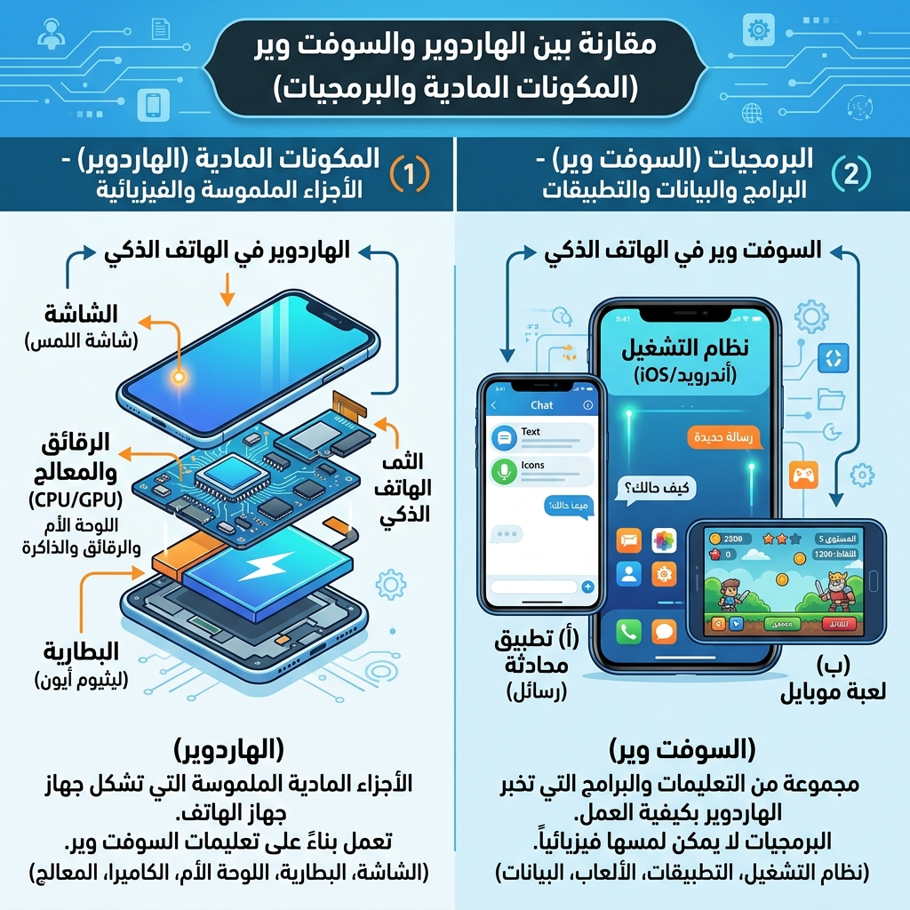
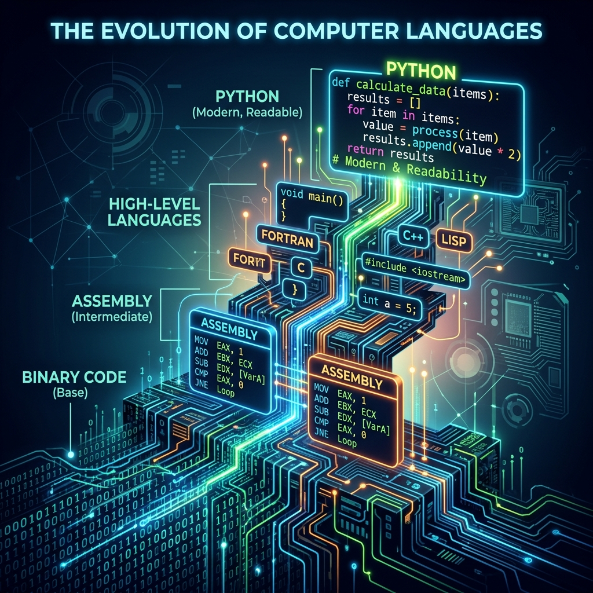
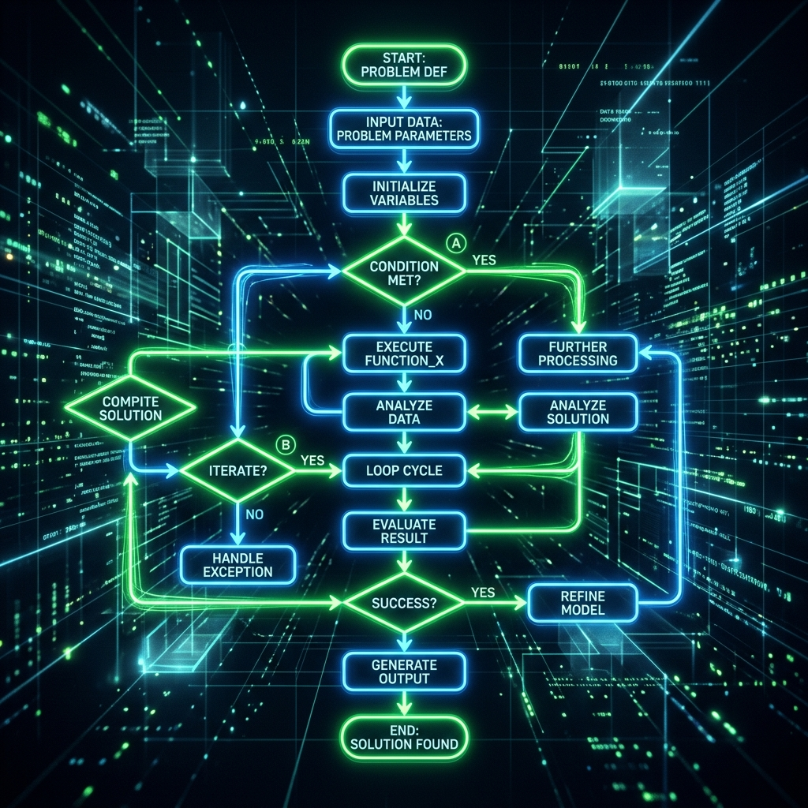
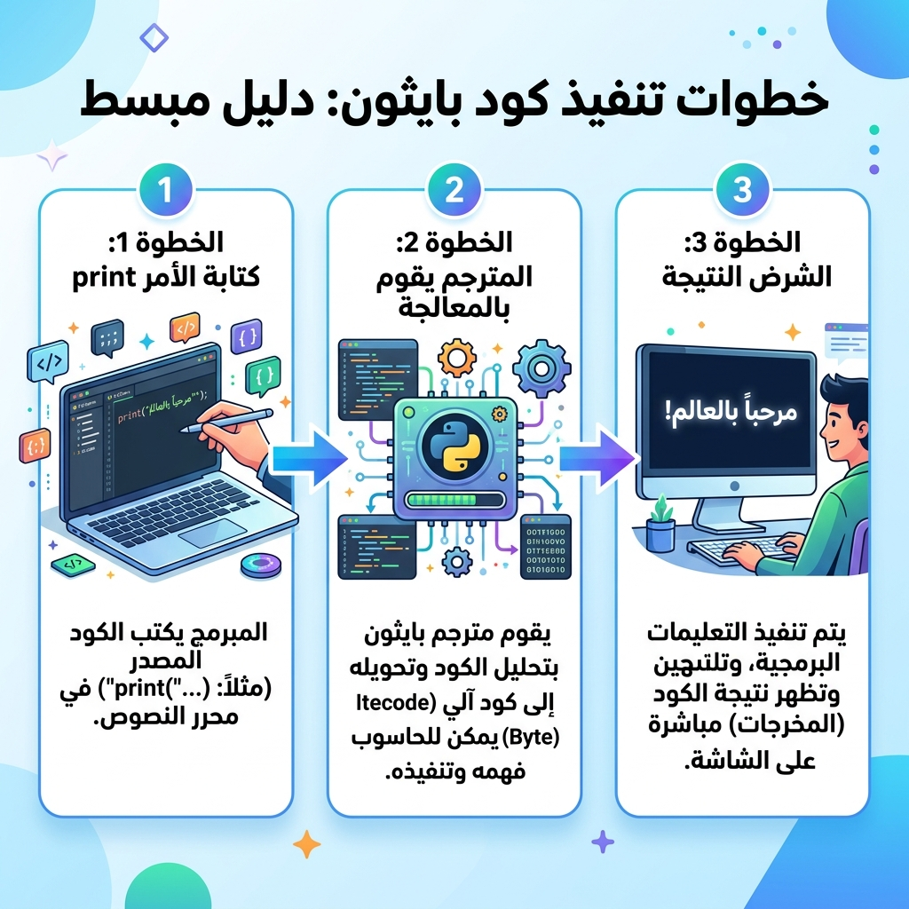

مرحباً بك في ZoomTech
دليلك الشامل والتفاعلي لتعلم أساسيات الكمبيوتر، الخوارزميات، والبرمجة بلغة بايثون. مصمم خصيصاً ليرافقك في منهج البرمجة والذكاء الاصطناعي بأسلوب ممتع واحترافي.
ابدأ الرحلة الآنالمفاهيم الأساسية (Foundation)
قبل كتابة الأكواد، يجب أن تفهم كيف يعمل الكمبيوتر وكيف يفكر المبرمج.
1. الهاردوير والسوفت وير (Hardware & Software)
الكمبيوتر يتكون من شقين رئيسيين يتكاملان معاً:
- الهاردوير (Hardware): هي الأجزاء الملموسة مثل المعالج (CPU) الذي يعتبر عقل الكمبيوتر، والذاكرة (RAM)، واللوحة الأم، وحتى شاشة الموبايل الذي في يدك.
- البرمجيات (Software): هي الأوامر والبرامج غير الملموسة التي تدير الهاردوير، مثل نظام التشغيل (Windows أو Android) والتطبيقات المختلفة. الهاردوير بلا برمجيات هو مجرد قطعة حديد خردة!
الشاشة، والبطارية، والكاميرا التي تلمسها بيدك هي (الهاردوير). بينما تطبيق الواتساب (WhatsApp) أو لعبة ببجي التي تفتحها للعب هي (السوفت وير).

2. لغات الكمبيوتر (Computer Languages)
الكمبيوتر لا يفهم لغتنا البشرية! هو جهاز إلكتروني يفهم فقط "النبضات الكهربائية" والتي نرمز لها بـ 0 (لا توجد نبضة) و 1 (توجد نبضة).
هذه تسمى لغة الآلة (Machine Code). ولأن كتابة الأصفار والوحايد صعبة جداً علينا، ابتكر البشر لغات البرمجة عالية المستوى مثل (Python)، وهي لغات قريبة من الإنجليزية. نكتب الكود بها، ثم يقوم برنامج وسيط يسمى "المترجم" أو "المفسر" بتحويلها إلى أصفار ووحايد ليفهمها الكمبيوتر.

3. الخوارزميات (Algorithms)
الخوارزمية هي ببساطة "خطوات منطقية ومتسلسلة لحل مشكلة معينة". تماماً مثل وصفة الطبخ، يجب أن تكون الخطوات مرتبة وواضحة.
قبل أن تكتب كود بايثون، يجب أن تفكر في الخوارزمية وتكتبها على ورق أو ترسمها باستخدام الخرائط التدفقية (Flowcharts) لترتيب أفكارك المنطقية واكتشاف الأخطاء مبكراً.
لا يمكنك صب الماء قبل غليه! الخوارزمية تعلمنا الترتيب: 1- ابدأ. 2- اغلِ الماء. 3- ضع كيس الشاي. 4- صب الماء. 5- النهاية.


أساسيات لغة بايثون (Python)
كيف يتم تنفيذ كود بايثون فعلياً؟ (خطوة بخطوة)
شاهد هذه الصورة التي توضح الرحلة من كتابة الكود حتى يظهر على الشاشة:

لماذا بايثون؟
لغة بايثون هي اللغة الأولى عالمياً في مجالات الذكاء الاصطناعي، وهي اللغة المعتمدة في المنهج المصري لسهولتها وقوتها.
الطباعة (Print)
دالة الطباعة هي طريقتك لجعل الكمبيوتر يكتب على الشاشة.
print("ZoomTech is great!")
المتغيرات (Variables)
صناديق نضع فيها البيانات ونعطيها اسماً. بايثون تتعرف على النوع تلقائياً.
name = "Hazem"
score = 100
التعليقات (Comments)
ملاحظات يكتبها المبرمج لنفسه أو لزملائه، والكمبيوتر يتجاهلها تماماً.
# هذا تعليق لتوضيح الكود
x = 5
العمليات الحسابية
الجمع (+)، الطرح (-)، الضرب (*)، القسمة (/). إضافة لباقي القسمة (%).
result = 10 % 3 # النتيجة 1
المترجم التفاعلي (ZoomTech Compiler)
المكان الأمثل لتطبيق ما تعلمته. اكتب كود بايثون هنا واضغط "تشغيل الكود" لتنفيذه مباشرة!
بنك أسئلة ZoomTech التفاعلي
اختبر استيعابك للمفاهيم والأساسيات. سيتم تصحيح إجاباتك فوراً مع توضيح الإجابة الصحيحة إذا أخطأت!